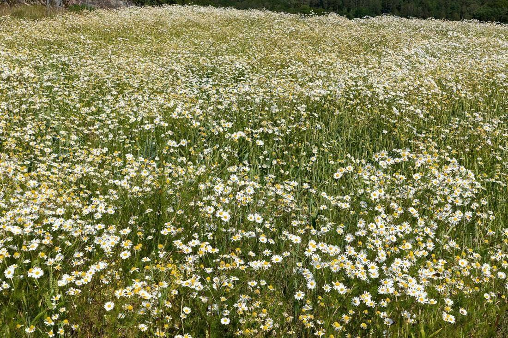

制作側の連想
アコーディオンカーテンを、配置図にしてみる
このサイトは、折りたたんで開け閉めする蛇腹状の間仕切り・アコーディオンカーテンを図にして作りました。六つの部位に番号をふり、上の図と並べています。制作側の連想で、お店の理念・由来とは無関係です。実際の製品の仕様を示すものではありません。
凡例
六つの部位
- 1レール天井やかもいに取り付ける、細長い金属の通り道。カーテン全体の動く向きを決める部分。
- 2ランナーレールの溝の中を転がる、小さな車輪つきの部品。蛇腹の上端をぶら下げて滑らせる。
- 3蛇腹折り目をつけた布やシートの本体。たたむと細くまとまり、広げると一枚の面になる。
- 4持ち手先頭の縦枠についた取っ手。開け閉めのときに握って引く部分。
- 5戸先の留め閉じた端が受け側と合わさる位置にある、磁石などの留め具。
- 6すそ蛇腹の下端。床すれすれの高さで、ゆれをおさえる細い板やおもり。
写真(イメージ)
写真(イメージ)


写真はイメージです。お店のものではありません。
ご案内
お店のこと(確認できたものだけ)
| 所在地 | 〒370-0069 群馬県高崎市飯塚町３８２ |
|---|---|
| 電話 | 準備中 |
| 営業時間 | 準備中 |
| 定休日 | 準備中 |
| ご予約 | 準備中 |
| 駐車場 | 準備中 |
| SNS | Instagram @lalasweets_takasaki |